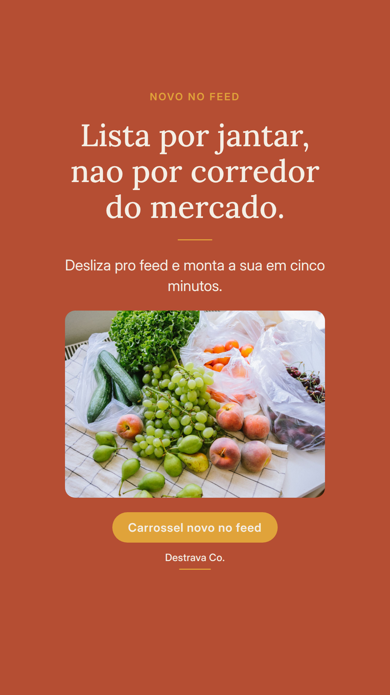
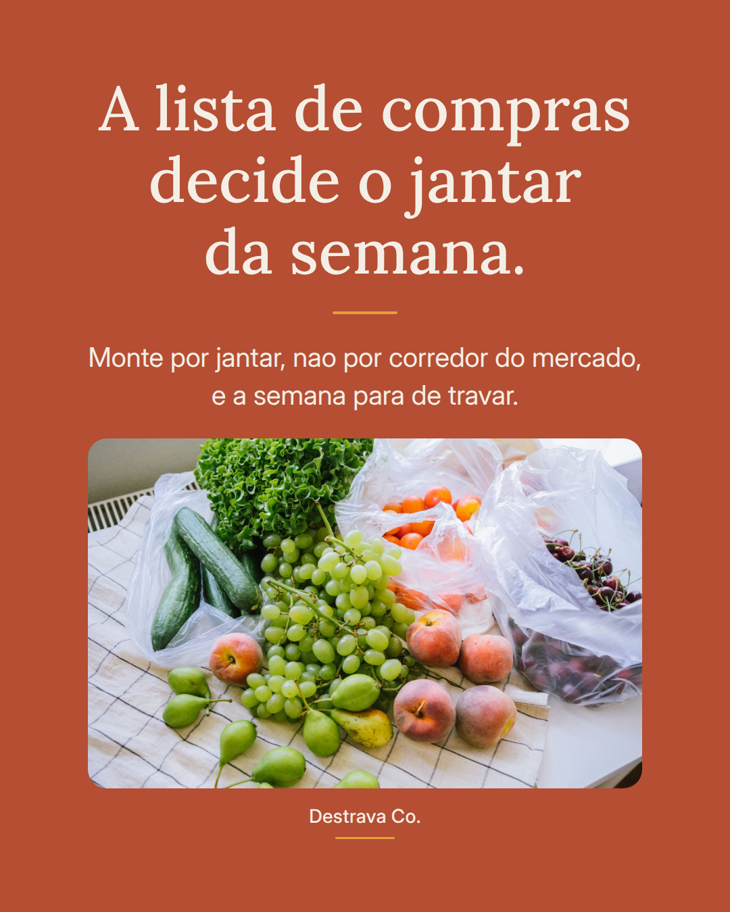
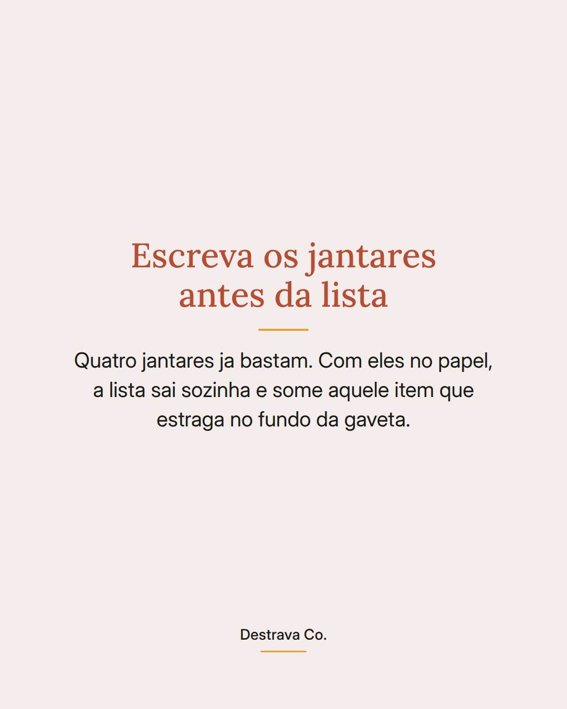
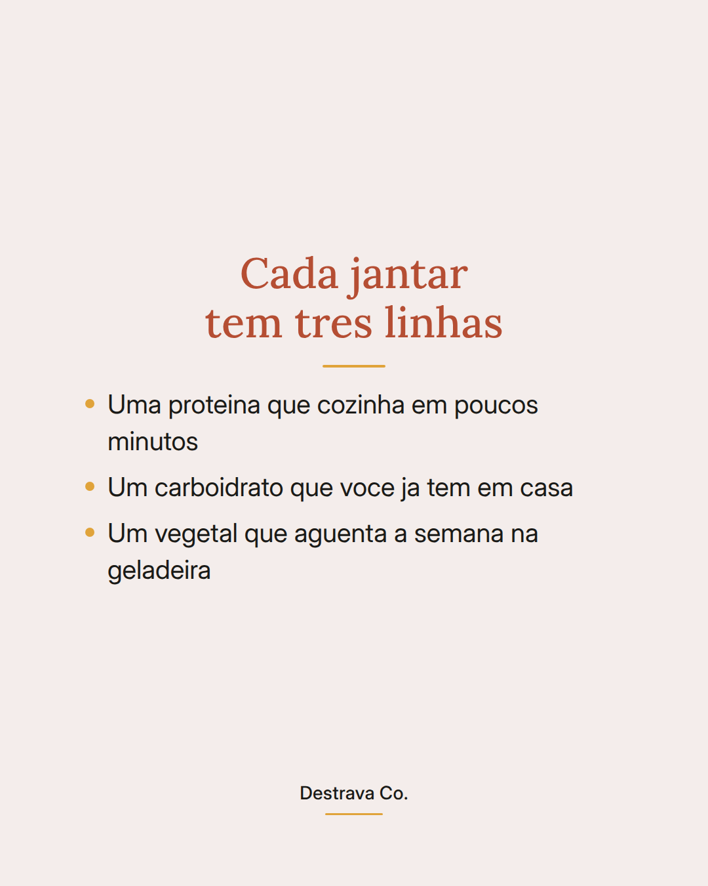
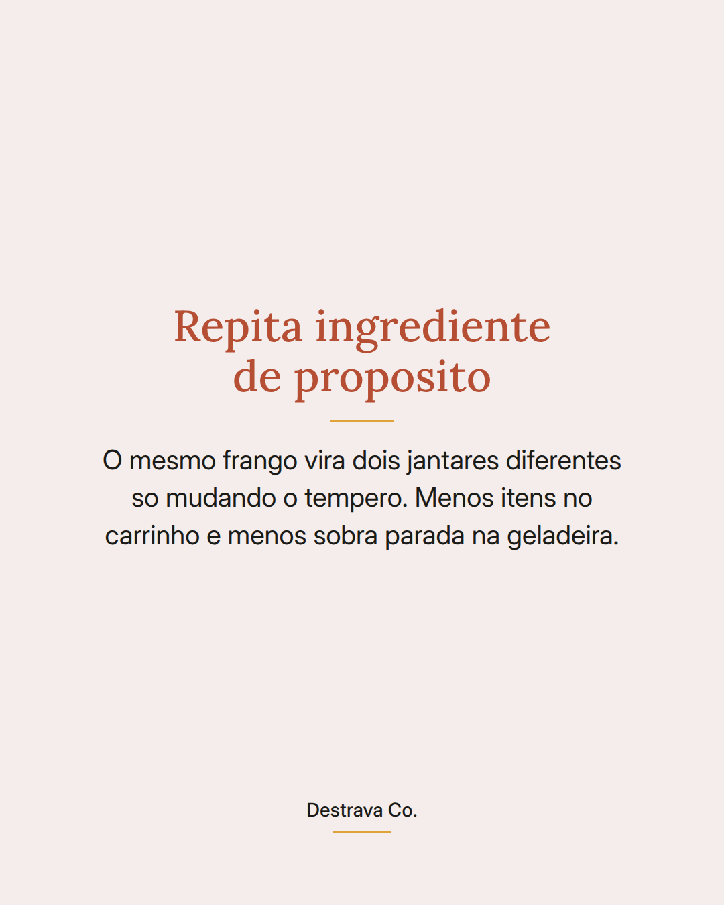

Lista de compras por jantar resolve mais que lista por corredor do mercado.
Quando a gente anota leite, arroz, tomate e frango soltos, chega em casa com sacola cheia e continua sem saber o que fazer as sete da noite. Quando a gente anota jantar de segunda, jantar de terca, a compra ja vem com destino.
A formula e simples: uma proteina rapida, um carboidrato que voce ja tem e um vegetal que aguenta alguns dias na geladeira. Repete o mesmo ingrediente em dois jantares e muda so o tempero.
Salva pra usar na proxima ida ao mercado e manda pra quem sempre compra demais e cozinha de menos. Se quiser os jantares ja prontos, o PDF com 20 receitas de ate 15 minutos esta aqui no perfil, de graca.